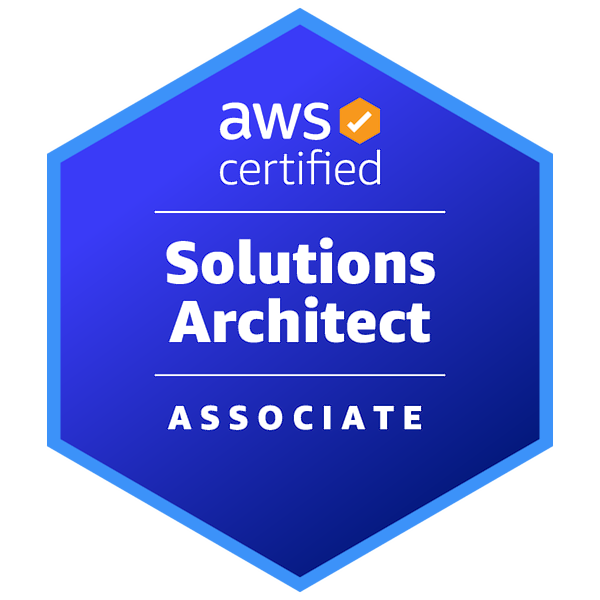

Enterprise Integration
Built product integrations across customer-specific identity, organization data, and interface constraints.
Backend Engineer · Integration · Identity · Automation
Eliminating repetition through automation is how I work — I have designed and operated pipelines ranging from CI/CD tooling and patch-deployment chatbots to autonomous issue-analysis systems. I am currently implementing an AI-driven pipeline that handles issue analysis, code modification, and build end-to-end.
I translate customer-specific constraints into maintainable backend systems.
Built product integrations across customer-specific identity, organization data, and interface constraints.
Worked on SAML-based SSO, metadata lifecycle handling, logout flows, and access-control related issues.
From build pipelines to patch deployment bots to KMS automation — when I find inefficiency, I replace it with structured automation.
Designing and building an AI autonomous dev pipeline grounded in a 25,633-issue · 15,628-commit SQLite knowledge base.
Unified heterogeneous customer directory systems at the product level and built safeguards to prevent large-scale HR data misapplication.
Tech: Java 21, Spring Boot, Spring Batch, MyBatis, Oracle, MSSQL, PostgreSQL, MySQL, MariaDB, LDAP, REST API, IBM MQ, UDP
Even with the same standard, each IdP implements it differently — causing frequent integration failures. Designed and operated a SAML SP structure that absorbs this divergence at the product level.
Tech: Spring Boot, SAML 2.0, Okta, OneLogin, Access Control
Built a notification channel layer that connects each customer's different alert infrastructure (internal messengers, MQ, SMS, etc.) through a single interface.
Tech: Spring Boot, REST API, IBM MQ, UDP
Designing and building an AI-driven pipeline that autonomously handles issue analysis, code modification, and build — the developer only reviews and approves the plan.
Focus: AI Workflow Automation, Autonomous Pipeline, SQLite, Claude Code
Built a real-time monitoring pipeline for AWS Bedrock (Claude Code) usage and prompts across the engineering team during the company's early AX transformation.
Tech: AWS Bedrock, Kinesis Data Firehose, CloudWatch Logs, CloudTrail, S3, Glue, Athena, OpenSearch, SNS
Identified team-wide inefficiencies — repetitive tasks, legacy migrations, security checks — and led automation and standardization efforts.
Focus: CI/CD, Git Migration, JDK Upgrade Automation, KMS, Developer Productivity
Supported operations of a UDI tracking management system in a medical device context.
Fully automated the entire lifecycle — from Flutter development and store release to content operations and monetization.
Tech: Flutter, Firebase, Cloudflare R2, Google Play Store
Java ecosystem · enterprise integration and identity domain
Certifications

Awards
3 years of enterprise integration and identity experience, combined with hands-on automation and AI pipeline work — ready to contribute from day one.